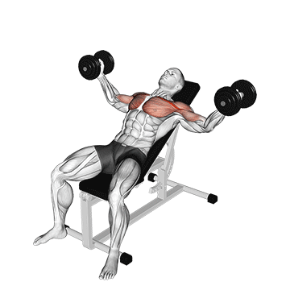

1 - Flexão de Braço Tradicional
Execução: Comece com as mãos no chão, alinhadas com o peito, e o corpo estendido. Abaixe-se até que o peito quase toque o chão e empurre de volta à posição inicial.
Dica: Se estiver difícil, apoie os joelhos no chão para reduzir a carga e garantir uma boa execução.
2 - Supino com Halteres (ou garrafas de água)
Execução: Deite-se em um banco (ou no chão se estiver em casa) e segure um peso em cada mão. Empurre os pesos para cima até que os braços estejam estendidos e depois desça lentamente.
Dica: Escolha um peso leve para se acostumar ao movimento e mantenha os cotovelos alinhados para evitar lesões.
3 - Crucifixo com Halteres (ou garrafas de água)
Execução: Deite-se em um banco ou no chão com os braços estendidos para o alto e os cotovelos levemente flexionados. Abra os braços para os lados até que fiquem paralelos ao chão e depois volte à posição inicial.

Dica: Mantenha o controle durante o movimento para evitar lesionar o ombro.
4 - Flexão Inclinada
Execução: Apoie as mãos em uma superfície elevada (como uma mesa ou um banco) e faça o mesmo movimento da flexão tradicional. Isso diminui a carga, facilitando a execução para iniciantes.
Dica: Aumente a altura conforme sua necessidade para facilitar o exercício.